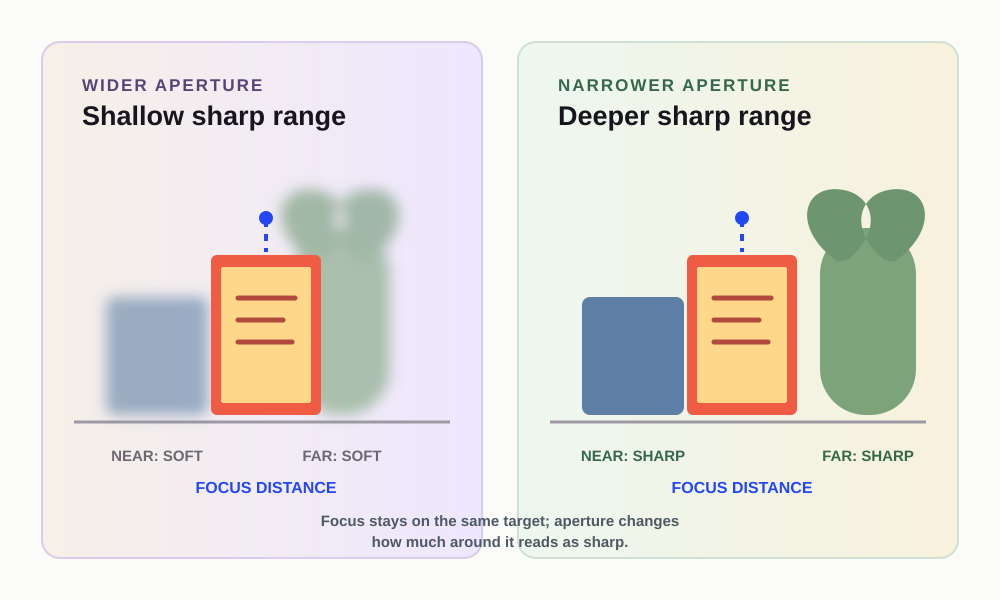

Depth of field sounds technical because it is often introduced with formulas. For a beginner, a simpler question is more useful: after the camera focuses on one distance, how much of the scene around that distance will look acceptably sharp?
Imagine two objects on a table: a mug close to the camera and a label several inches behind it. Focus on the mug. The focus plane is centered on that distance, but the label may or may not look sharp enough depending on aperture, distance, and how large the objects are in the frame. That visible range is the practical meaning of depth of field.
Start with the focus plane
Autofocus or manual focus chooses a distance. It does not make every object in the scene equally sharp. The focus plane can be thought of as an invisible slice running through the subject. Details near that slice are more likely to appear sharp; details farther away may become softer.
Nikon defines depth of field as the zone of acceptable sharpness in front of and behind the focused subject. “Acceptable” matters. A background may be technically rendered but still look soft at the size you view the image. A tiny focus error may matter more when the subject is close or the aperture is wide.
Before changing a setting, identify the detail that must be sharp. It might be a person’s nearer eye, a product label, or the front edge of a flower. This prevents the vague goal of “make everything sharp” from replacing the actual subject.
Aperture changes the width of the useful range
A wider aperture, represented by a lower f-number, generally creates a shallower depth of field. A narrower aperture, represented by a higher f-number, generally creates a deeper depth of field. Nikon’s aperture guides show this relationship directly and recommend checking a test frame when an intermediate amount of sharpness is needed.
The choice is a trade-off. A wider aperture can help separate a subject from the background, but it can also leave only part of a deep subject sharp. A narrower aperture can keep more of the scene within the useful range, but it lets in less light and may require another exposure adjustment.
This is why the answer is not “always use the widest aperture.” The right starting point depends on what must remain readable.
Distance changes the problem too
Move the camera closer to a subject and the subject occupies more of the frame. Move the subject farther from the background and the background relationship changes. These distance decisions can make separation more or less visible even when the aperture stays the same.
Suppose a mug is close to a wall. A wider aperture may soften the wall, but the wall can remain recognizable because it is near the mug. Move the mug farther from the wall and the same aperture may produce a more obvious separation. If the mug itself has depth, however, the front and back may not both stay sharp.
The lesson is not to memorize a blur recipe. It is to treat aperture and distance as connected parts of the scene geometry.
A two-distance setup
Place one object near the camera and another farther away. Keep the camera position fixed while making three comparisons:
- Focus on the near object with the widest available aperture.
- Focus on the near object with a narrower aperture.
- Move the far object farther back and repeat one of the settings.
Inspect the near object, the far object, and the background edge at the same zoom. Write down which detail stayed sharp and which detail softened. If the result is hard to see, choose objects with printed text or strong edges rather than smooth surfaces.
This is a learning comparison, not a promise that every camera or phone will show the same amount of blur. Phones may use fixed apertures or computational depth controls, so the menu and visual effect depend on the device.
What to do when too little is sharp
If only part of the subject is sharp and more depth is needed, try a narrower aperture or simplify the subject’s depth. If the background is too distracting, increase subject-background distance or choose a wider aperture when the important detail can still fit inside the sharp range.
If the frame is too dark after narrowing the aperture, check whether a slower shutter is safe for a stationary scene or whether ISO needs to rise. If the subject is moving, protect the shutter speed first and accept that depth of field may need a different compromise.
Do not use sharpening in an editor as proof that the original depth of field was sufficient. Sharpening can emphasize edges; it cannot make an out-of-focus detail contain the same information as a focused one.
The inspection checklist
After each frame, answer four questions:
- Where did the camera focus?
- Which detail had to be sharp?
- Did the useful sharp range include that detail?
- What changed when aperture or distance changed?
If you cannot answer the first question, make the focus point more deliberate before changing aperture. If the answer is clear but the range is too shallow, change aperture or the subject’s geometry. If the background is the issue, change its distance or the composition before assuming the lens is the problem.
Depth of field is not a mysterious property that appears after you learn the right formula. It is a visible relationship between the focus plane, aperture, distance, and the detail you want the viewer to read.
If the camera offers a focus-point choice, place it on the detail that matters instead of allowing a busy background to choose for you. If the device offers only a simpler tap-to-focus workflow, make the same decision with the tap. Focus placement comes before judging how much depth the aperture can provide.
Research sources
Sources
- What Is Aperture? — Nikon USA
- Understanding Maximum Aperture — Nikon USA
- Photography for beginners: master the basics — Adobe
- Photographic guide for field researchers — UK Government